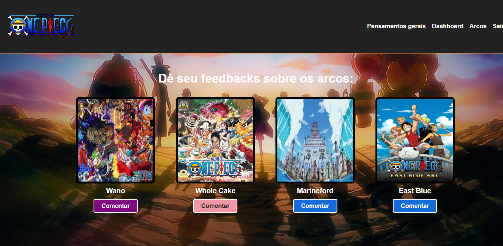
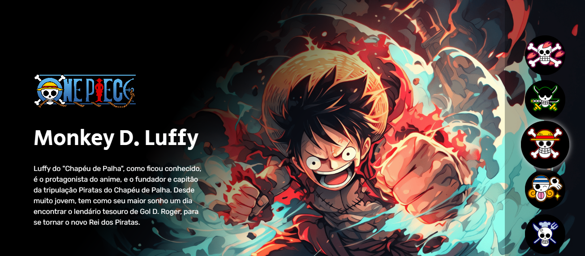
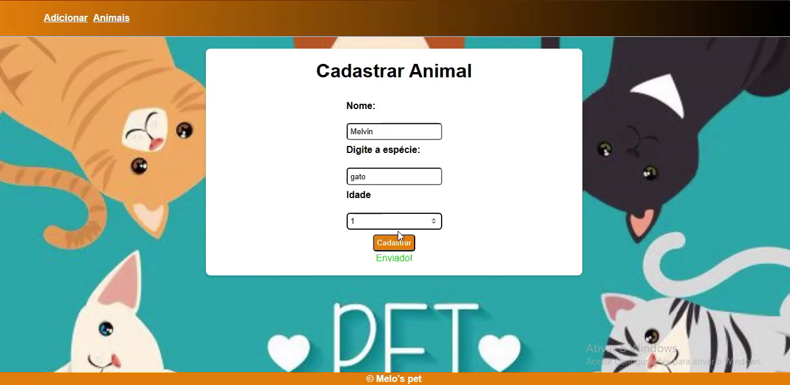
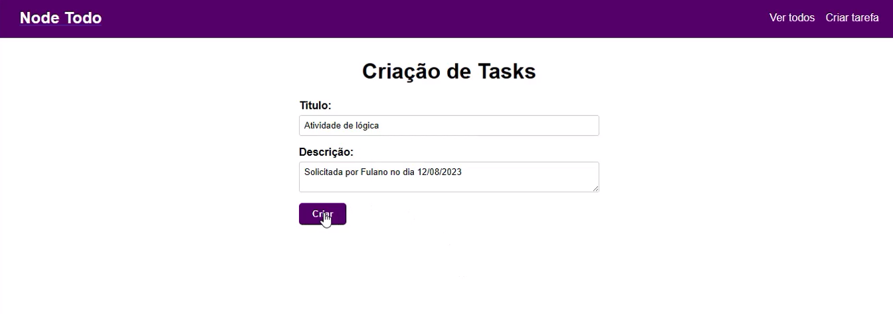
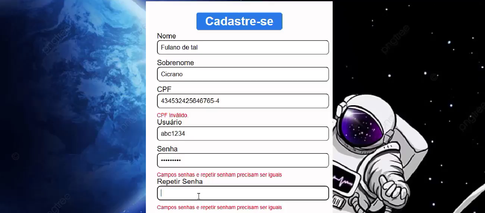

Meus Projetos
Aqui estão alguns dos meus projetos:

Comunidade de One Piece, você pode ler e compartilhar seus pensamentos sobre a obra com os outros usuários cadastrados, como também comentar seus posts.
Ver no GitHub

Apresentação dos personagens do bando do chapéu de palha
Ver no GitHub

Gerenciador de animais para um petshop. Pode ser realizado o registro do animal, exclusão edição, vacinas aplicadas dentre outras funcionalidades.
Ver no GitHub

Todo-list
Ver no GitHub

Validação de formulário
Ver no GitHub